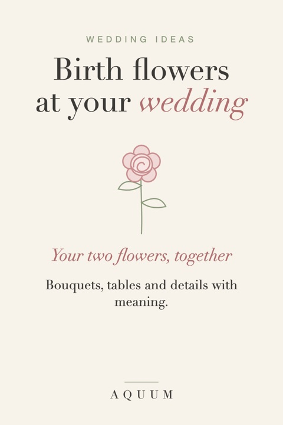

Birth Flower Wedding Ideas: Bouquets, Tables and Details with Meaning
2026-10-03
Written by the team behind Aquum, a small birth flower gift shop. How we make money.

Wedding flowers are usually chosen by color and season. Birth flowers add a third reason: who they belong to. A bouquet with your flower and your partner's, a table named after each grandparent's month, a sprig pinned to every bridesmaid: small choices that turn decoration into something personal.
Not sure which flowers are yours? The birth flower finder tells you from a birthday, and birth flowers by month has all twelve with their meanings.
Your bouquet: two flowers, together
The simplest idea is the most moving: build the bridal bouquet around both your birth flowers.
- Rose (June) and daisy (April): love in all its forms, with uncomplicated joy.
- Carnation (January) and chrysanthemum (November): love that doesn't give up, and honest friendship.
- Larkspur (July) and aster (September): an open heart, with wisdom and patience.
If one flower is out of season, use its second birth flower: sweet pea instead of daisy, honeysuckle instead of rose, cosmos instead of marigold. See the second birth flowers. Our family birth flower bouquet tool lets you see how two (or more) flowers look together before you talk to a florist.
Bridesmaids and groomsmen
- A bouquet for each bridesmaid with her own birth flower, all tied with the same ribbon so they still look like a set.
- Boutonnieres with each groomsman's flower: small blooms like aster, larkspur or a single carnation work best.
- A thank-you gift with their flower. Ideas in our bridesmaid gift guide.
Tables, names and place cards
- Name tables after months instead of numbers, with that month's flower in the centerpiece. Our free table names have all twelve. Seat each family member at their own month when you can.
- Place cards with each guest's flower. Our free printable place cards have all twelve months and a line for the name.
- A welcome sign with your two flowers and the date.
Honoring family
- A bloom for those who aren't there: add a grandparent's birth flower to your bouquet or tie a small sprig to the stem.
- Mothers' corsages with each mother's own birth flower.
- The family wreath: our free embroidery patterns include a wreath with all twelve flowers; stitch only the months of your two families as a keepsake or a ring bearer pillow.
Cake, stationery and favors
- Cake: pressed or sugar flowers of your two months, or a simple line drawing on the invitation repeated on the cake.
- Invitations and menus: a small drawing of each flower next to your names.
- Favors: seed packets of each guest's birth flower, or a bookmark with their flower. Our free bookmarks are ready to print.
After the wedding
- Frame your two flowers with the date: a first-anniversary gift waiting to happen. More in birth flower anniversary gifts.
- Thank-you cards: see what to write in a thank you card, with wording for wedding gifts.
A note on seasons and allergies
Not every birth flower is available in every month. Talk to your florist early: many will source an out-of-season flower, suggest a lookalike in the right color, or use dried or silk stems for that one bloom. If a guest has allergies, low-pollen choices like roses, carnations, tulips and hydrangeas are safe bets for the tables.
What does each flower mean? See flower meanings from A to Z, or flowers that mean love for the bouquet.